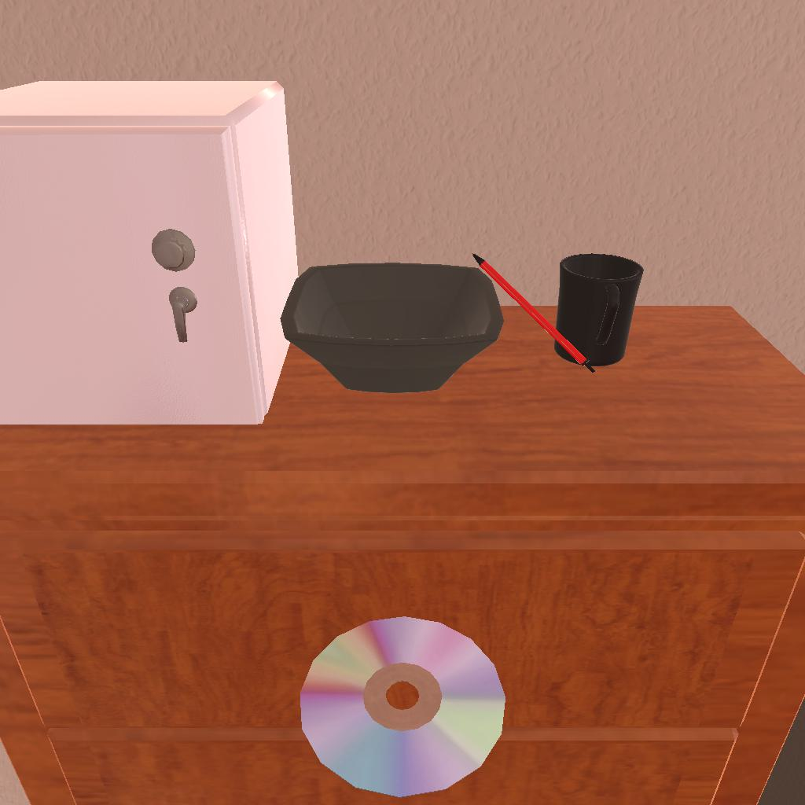

---------------------------------------------------------task: 6---------------------------------------------------------
--------------------------------------------------------------------------------------------------------------------------------------------------------------------
--------------------------------------------------------------------------------------------------------------------------------------------------------------------
Step:--------------------------------------------------------------------------14-------------------------------------------------------------------------------
----------------------------------------
VLM Prompt:
Image1:
Image2:
**Instruction**
1. Analyze the provided images to identify all visible household objects and compare the difference between images (e.h. whether the object is opened or not and taken on hand or not), focusing on those relevant to the task description "put some cd on safe."
2. Use the analysis of images and the task hint "The agent must find an object of the desired type, pick it up, find the correct location to place it, and put it down there." to answer the question: what is the most reasonable action in the choices for the task description "put some cd on safe"?
3. Decide and write the answer using the template: The answer is: (i): , where i is the real number. If there is no desired object in images, search every place based on **Initial Observation** to find the object. And if no one is exactly correct, choose a similar answer.
**Initial Observation**
You are in the middle of a room. Looking quickly around you, you can see bed (1-2), dresser (1), sidetable (1-2), drawer (1-11), desk (1), garbagecan (1), safe (1)
**Answer Choices**
(1): go to bed 1
(2): go to dresser 1
(3): go to bed 2
(4): go to sidetable 1
(5): go to drawer 1
(6): go to drawer 2
(7): go to sidetable 2
(8): go to drawer 3
(9): go to drawer 4
(10): go to desk 1
(11): go to garbagecan 1
(12): go to drawer 5
(13): go to drawer 6
(14): go to drawer 7
(15): go to drawer 8
(16): go to drawer 9
(17): go to drawer 10
(18): go to drawer 11
(19): open safe 1
(20): close safe 1
(21): examine cd 1
(22): examine safe 1
**Answer**
Let's think step by step by following the instructions.
----------------------------------------
----------------------------------------
Original Response:
Firstly, analyzing the provided images, there is a CD visible on the lower right part of Image1 and Image2. The safe is also visible in both images and is closed in both images. There is no difference in the state of the safe or the CD between the two images.
Given the task description "put some cd on safe," the most reasonable action would involve picking up the CD and placing it on the safe. However, the action choices provided do not include picking up the CD nor placing it on the safe.
Based on the initial observation, the agent is in the middle of a room with various pieces of furniture and objects, including a safe. The task hint suggests that the agent must find an object of the desired type, pick it up, and put it down in the correct location. Since the CD is already visible in the images and the safe is closed, the next logical step would be to open the safe to put the CD inside it.
The answer is: (19): open safe 1
----------------------------------------
----------------------------------------
>>> Refine Original VLM Response and Get Pure Action: open safe 1
----------------------------------------
-----------------------------------------------------------------
Running time: 15.85909652709961 seconds
Total Money: 2.4816100000000008
-----------------------------------------------------------------
-----------------------------------------------------------------
Text Observation:You open the safe 1. The safe 1 is open. In it, you see a bowl 1, a mug 1, and a pen 1.
-----------------------------------------------------------------
UNSUCCEED